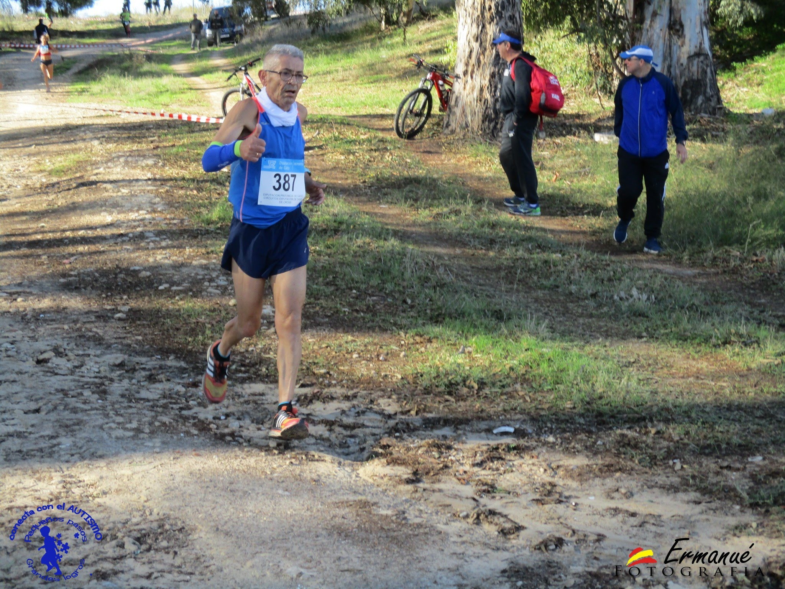

Cómo empezó todo
Todo comenzó casi por casualidad.
Recuerdo ver en televisión un campeonato del mundo de atletismo. Siempre me había gustado el deporte y también el fútbol, pero nunca sentí que tuviera las cualidades necesarias para destacar en él.
Sin embargo, el atletismo me transmitía algo diferente: esfuerzo, sacrificio, constancia y la posibilidad de competir contra uno mismo.
Poco a poco descubrí que correr podía convertirse en mi deporte.

Los primeros años
Llegaron los entrenamientos, las primeras carreras y la necesidad de aprender poco a poco.
Correr comenzó a convertirse también en una manera de desconectar de los problemas del día a día. Después de entrenar quedaba esa sensación de haber hecho algo por uno mismo.
Cada carrera enseñaba algo nuevo. Unas veces salían las cosas bien y otras no tanto, pero siempre había una razón para volver a entrenar.

Descubrir la competición
Con el tiempo llegó algo que hizo crecer todavía más la motivación: competir.
Ponerse un dorsal, colocarse en una línea de salida, recorrer los kilómetros y luchar hasta la meta.
Los resultados importaban, pero también importaba sentir que cada entrenamiento servía para intentar ser un poco mejor que antes.

Un equipo, unos compañeros
En mi trayectoria hubo un momento especialmente importante: formar parte de Atletismo de Nueva Jarilla.
Compartir entrenamientos y carreras hizo que el atletismo dejara de ser solamente una experiencia individual.
Los compañeros, las conversaciones, los kilómetros compartidos y el ambiente de las carreras forman parte de los recuerdos que permanecen.

El primer gran recuerdo
Hay carreras que se olvidan y otras que permanecen para siempre.
Una de ellas fue el Cross de Sanlúcar de Barrameda, donde conseguí la primera posición.
Aquel pódium representó mucho más que un resultado. Detrás estaban los entrenamientos, los kilómetros, el esfuerzo y todas las veces que había salido a correr sin saber exactamente hasta dónde podía llegar.

Más de 25 años corriendo
Los años fueron pasando y el atletismo siguió formando parte de mi vida.
El cuerpo cambia, las circunstancias cambian y también cambia la manera de entrenar.
Con el tiempo aprendí que no todo consiste en correr más rápido. También hay que saber escuchar al cuerpo, descansar y valorar todo lo que el deporte aporta fuera de las marcas.

Las dificultades también forman parte del camino
Ninguna trayectoria deportiva está formada solamente por buenos momentos.
También llegaron las lesiones y los momentos en los que fue necesario parar.
Hubo que aprender que descansar también forma parte del entrenamiento y que recuperarse es otra manera de seguir avanzando.
Las dificultades cambiaron algunas cosas, pero no consiguieron borrar las ganas de continuar vinculado al deporte.
Una nueva etapa
Hoy comienza una etapa diferente.
Después de tantos años corriendo, toca adaptarse a una nueva manera de entender el atletismo.
La marcha atlética aparece ahora como un nuevo camino, con nuevos aprendizajes, nuevos objetivos y nuevas experiencias por descubrir.
Quizás cambie la forma de avanzar, pero permanece la ilusión de seguir haciendo deporte.
No termina aquí
Esta historia no termina con una lesión, ni con el final de una etapa.
Después de tantos kilómetros todavía quedan caminos por recorrer y cosas nuevas por aprender.
Porque una vida ligada al deporte no se mide solamente por las marcas conseguidas, sino también por todo lo que hemos vivido mientras intentábamos alcanzarlas.